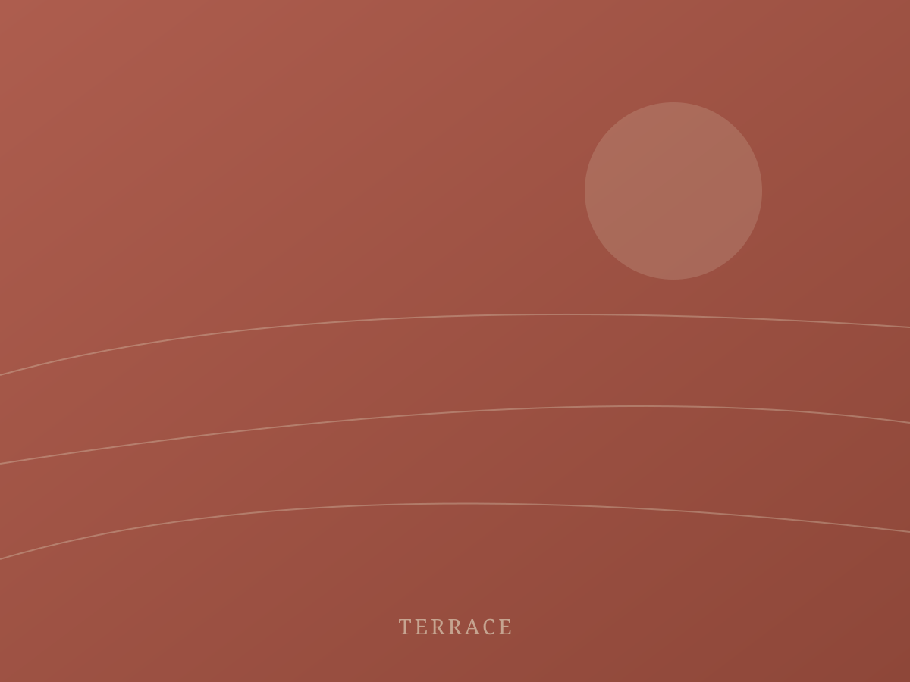
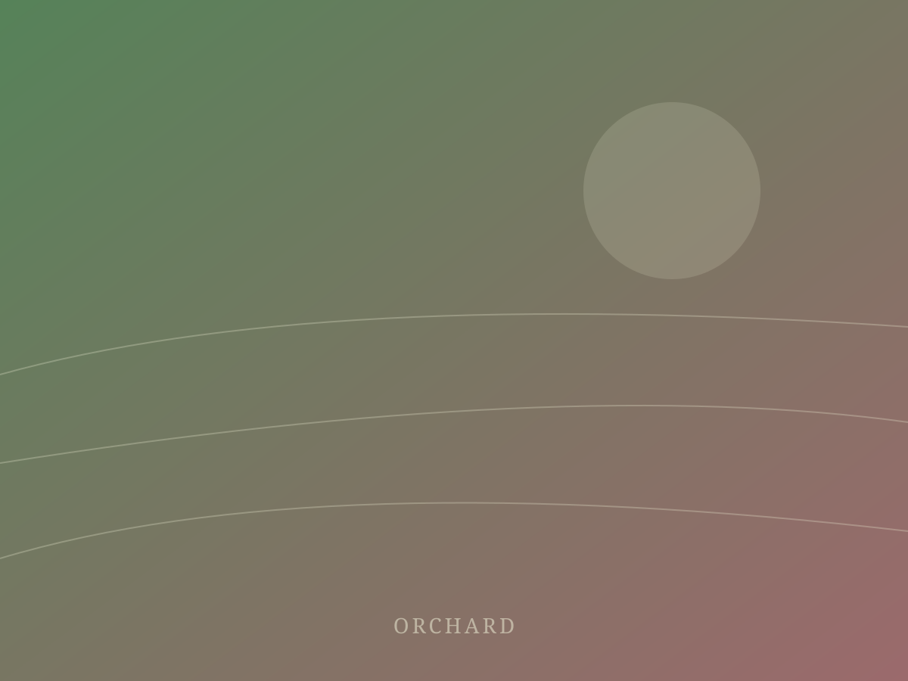
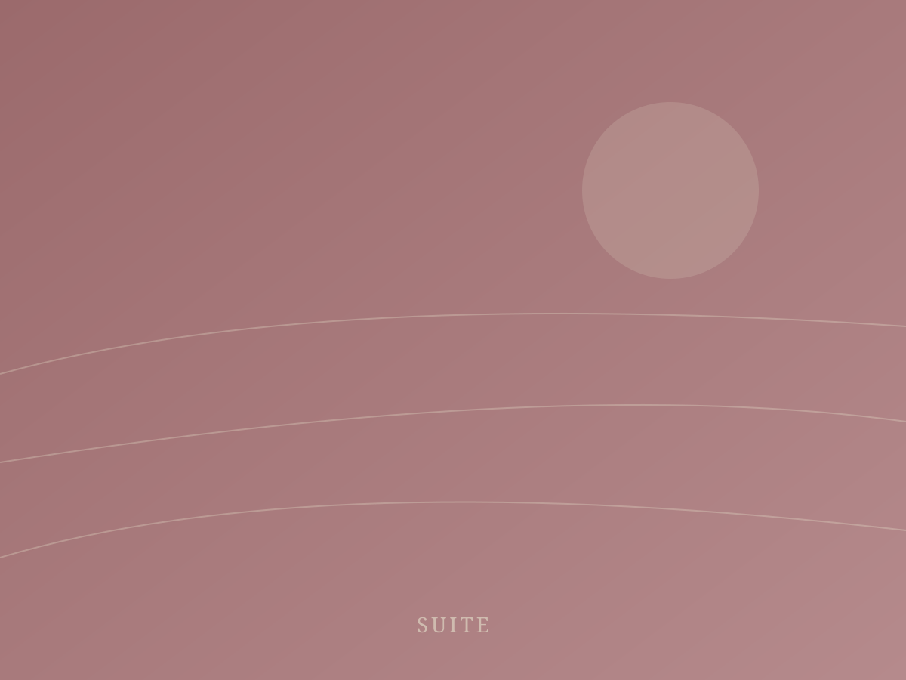
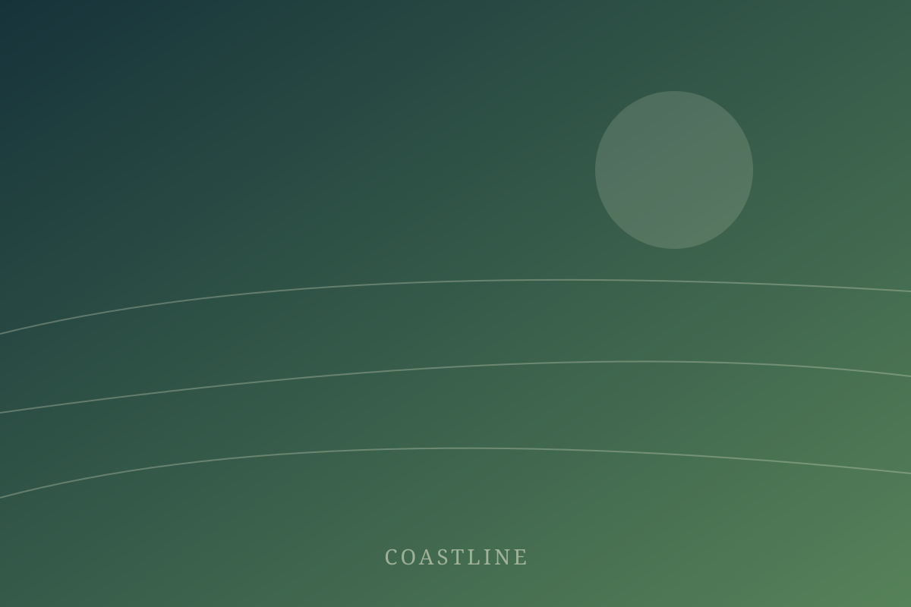

The Estate House
The house was finished in 1962 for a family of nine and has been altered roughly twice since. The staircase is steep, the plumbing is loud in one corner, and the light through the west windows between five and six in the evening is the reason anyone comes back.
Six rooms sit above the barrel cellar and share a balcony that runs the length of the building. Two face the vine rows, three face the orchard, and the sixth faces the crush pad, which is wonderful in June and unforgivable in September.
Breakfast is at the long table downstairs. There is no room service, no check-in desk, and no one who will mind if you make coffee at four in the morning.
Gallery





What is here
Amenities
Cellar access
The barrel room is unlocked from six in the morning.
Kitchen garden
Pick what you want. Tell the kitchen what you took.
Wood stove
Laid each afternoon in autumn and winter.
No televisions
There is one, in the office, for the weather.
Bicycles
Six of them, all slightly wrong, all rideable.
Breakfast
Served at the long table, 7 to 10.
Ready to Experience This Property?
Discover what makes this destination unforgettable.
Plan Your Visit